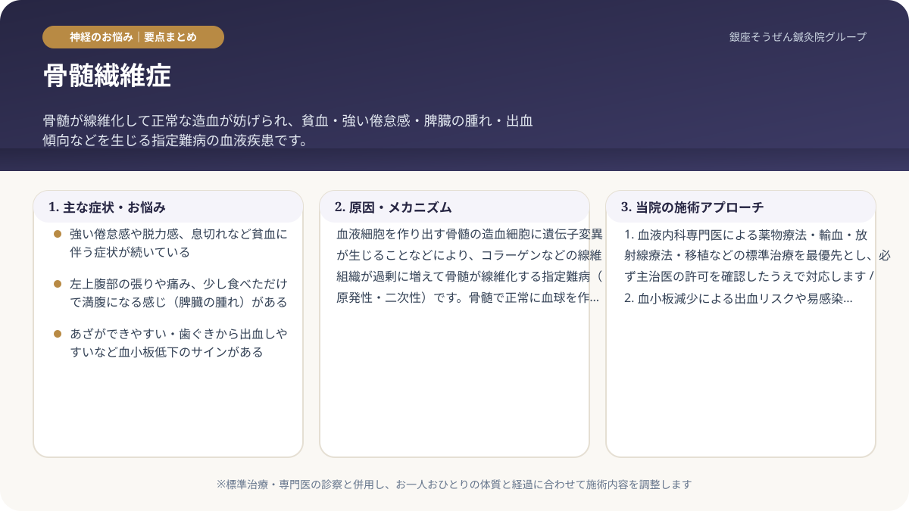
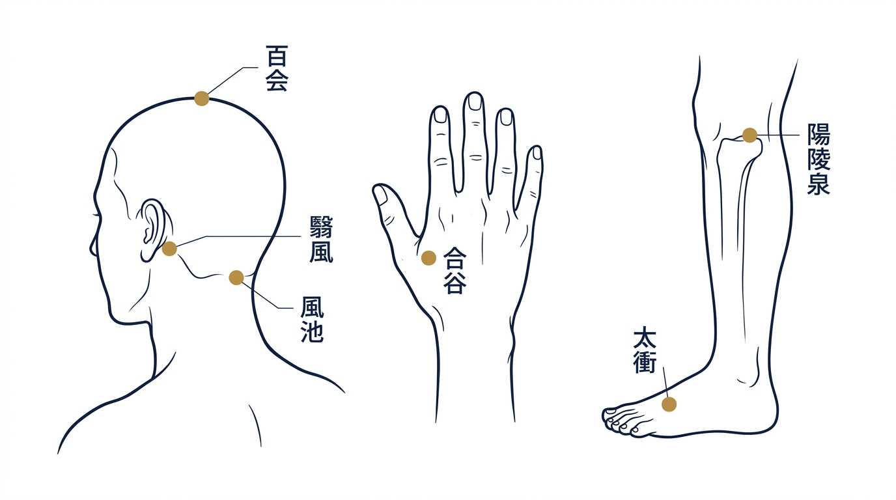

骨髄繊維症の鍼灸
骨髄が線維化して正常な造血が妨げられ、貧血・強い倦怠感・脾臓の腫れ・出血傾向などを生じる指定難病の血液疾患です。
まず知っておきたい要点と改善の流れ

血液細胞を作り出す骨髄の造血細胞に遺伝子変異が生じることなどにより、コラーゲンなどの線維組織が過剰に増えて骨髄が線維化する指定難病（原発性・二次性）です。骨髄で正常に血球を作れなくなると、貧血や異常な赤血球の出現、血小板減少が起こるほか、脾臓や肝臓が代わりに造血しようとして大きく腫れ（髄外造血）、腹部圧迫感や門脈圧亢進を招きます。
このようなお悩みはありませんか？
- ✓強い倦怠感や脱力感、息切れなど貧血に伴う症状が続いている
- ✓左上腹部の張りや痛み、少し食べただけで満腹になる感じ（脾臓の腫れ）がある
- ✓あざができやすい・歯ぐきから出血しやすいなど血小板低下のサインがある
- ✓原因のわからない体重減少や体調不良が長引いている
当院の施術アプローチ・改善の流れ
なぜ鍼灸で改善へ向かうのか？（作用機序の図解）
骨髄繊維症に対する鍼灸は、末梢神経の微小循環改善と中枢性感作の鎮静機序を通じて、お体本来の回復力を引き出します。

過敏な皮膚への過剰刺激を避けつつ、神経の走行に沿った安全な部位と遠位穴を刺激します。
神経を圧迫する周囲筋の過緊張を緩め、神経線維の修復に必要な酸素と血流環境を整えます。
微細な刺激で過敏化した痛み伝達回路を鎮静し、ピリピリ感や放散痛の波を和らげます。
睡眠不足や自律神経の緊張も同時に整え、しびれ・神経痛による生活支障度を軽減します。
院長YouTube解説・関連動画
骨髄線維症は、造血細胞のかわりに骨髄の中に線維組織が増える病気
骨髄線維症は、造血細胞のかわりに骨髄の中に線維組織が増える病気です。骨髄繊維症では、異常な形をした赤血球が作られたり貧血が起こったり脾臓が腫れたりします。
骨髄線維症の原因は、遺伝子変異や血液疾患です。多くは症状は何年も現れませんが、場合によっては疲労感や脱力感を感じたり出血しやすくなったりすることもあります。
骨髄線維症の多くは何年も自覚症状は現れない
骨髄線維症の多くは何年も自覚症状は現れません。自覚がなくても、異常な形をした赤血球が作られたり貧血が起こったり脾臓が腫れたりなどのことが起こります。
脾臓の腫れは血液が行っている細胞を作る働きを脾臓が行おうとして起こるものです。脾臓が腫れて大きくなると、腹痛が起きることもあります。さらに、門脈圧亢進症や食道静脈瘤につながることもあります。
場合によっては、骨髄線維症を発症した後すぐに貧血や血小板減少症、白血病などが起こることもあります。
症状が進むと、重い貧血になり、脱力感や疲労感を感じたり体重が減ったり、全身がだるくなったりするようになります。
骨髄線維症の改善方法は、薬や輸血、放射線、手術や骨髄移植です。骨髄繊維症の改善に取り組む上で目標とすることは、病気の進行を抑えることと症状を和らげることです。
骨髄繊維症の改善のために使われる薬は、主にホルモン剤と抗がん剤です。
ホルモン剤は、症状である貧血の改善や血を作る能力を高める作用があります。抗がん剤は、過剰に増えてしまった白血球や血小板の数を正しい状態にし、脾臓の腫れや全身に現れる症状を改善する作用があります。
輸血は、貧血の症状が強く現れた場合に不足した赤血球を補うために行う方法です。骨髄線維症では、改善のために何度も輸血を受けることがあります。長い期間の輸血は鉄過剰症につながることもあるため注意が必要です。
放射線での改善は、薬での改善に効果があまり見られず、特に腹部の症状が強い場合におこないます。腫れている脾臓や肝臓に放射線を照射して小さくする効果があります。
手術では、脾臓の摘出を行います。強い貧血の症状があり、腹部の症状も強く現れている場合、早く対処をしなくてはいけないこともあります。その場合は、手術で腫れて大きくなっている脾臓を取り出します。
重い貧血があり輸血を行い続ける必要がある場合や骨髄線維症が原因の重い合併症を起こしている場合も手術を行うことがあります。
骨髄移植は、骨髄線維症を完全に回復する可能性があると言われています。しかし、移植には命の危険や大きな合併症の危険もあります。そのため、医者ときちんと相談することが大切です。
骨髄繊維症には、原発性骨髄線維症と二次性骨髄線維症があります。原発性骨髄繊維症は他の病気がなく単独で起こるもので、二次性骨髄線維症は別の病気が原因で起こるものです。
原発性骨髄繊維症の約50%は5年以上生きることができると言われています。しかし、どのくらい生きることができるのかということに関しては非常に個人差が大きいです。
一般的に骨髄線維症は病気の進行が遅い病気です。そのため、骨髄繊維症を発症しても10年以上の生存を望むことができます。しかし、骨髄の機能がどのくらい良いかによって個人差が大きく現れ、場合によっては突然悪化することもあります。
神経のお悩みのツボ図解とセルフケア
実際の施術ではお一人おひとりの体質・症状に合わせて選穴しますが、末梢神経障害・神経障害性疼痛（帯状疱疹後神経痛・手根管・CIPN等）の臨床でよく用いられる代表的なツボの目安です。

📌 代表的なツボの詳細一覧表を開く（6穴） ▼
| ツボ名 | 位置の目安 | 主な狙い | セルフケアの注意点 |
|---|---|---|---|
| 合谷（ごうこく） | 手の甲、親指と人差し指の骨が交わる手前 | 上肢のしびれ・疼痛のゲートコントロール | 妊娠中の強刺激は避ける |
| 陽陵泉（ようりょうせん） | 膝外側下方、腓骨頭の前下のくぼみ | 筋会。下肢のしびれ・筋けいれん・緊張緩和 | 総腓骨神経近接のため強押し禁止 |
| 太衝（たいしょう） | 足の甲、親指と人差し指の骨が交わる手前 | 足部のしびれ・自律神経性の疼痛増悪緩和 | 妊娠中は強刺激回避。知覚鈍麻時は熱傷注意 |
| 風池（ふうち） | 後頭部の生え際、僧帽筋外側のくぼみ | 後頭部〜頸部神経の過敏鎮静・循環改善 | 頸動脈側へずらさず優しい圧で |
| 翳風（えいふう） | 耳たぶの後ろ、乳様突起と下顎骨の間のくぼみ | 顔面・頭頸部神経周囲の微小循環ケア | 神経・血管が集中するため強圧厳禁 |
| 百会（ひゃくえ） | 両耳上端を結ぶ線と正中線の交点 | 中枢性の疼痛過敏・睡眠の質改善 | 高血圧発作時・頭痛増悪時は中止 |
国際査読論文の科学的エビデンス
国際的な医学データベース（PubMed・Cochrane等）で報告されている末梢神経障害・神経障害性疼痛（帯状疱疹後神経痛・手根管・CIPN等）領域の代表的な査読済み鍼灸研究をまとめています（標準治療との併用や研究上の限界を含めて正確に掲載）。
📚 査読論文データ・PubMed出典リンクを開く（4件） ▼
| 年・研究デザイン | 対象・規模 | 主な結果 | 限界・出典 |
|---|---|---|---|
| 2024年 メタ解析 | 化学療法誘発性末梢神経障害（CIPN）21研究（n=2,121） | 疼痛強度（SMD -0.66, p=0.002）、QOL（p=0.01）、正中神経MCV・脛骨/腓腹神経SCVが有意改善。 | 介入・対照設定に臨床的異質性あり。 Front Neurol (PMID: 39555482) |
| 2019年 メタ解析 | 帯状疱疹後神経痛（PHN）系統的レビュー | 疼痛強度を有意に軽減（SMD -1.78, GRADE中等度）、不安・QOLも改善。 | 小規模研究が多く大規模高品質RCTでの追試が必要。 J Pain Res (PMID: 31410050) |
| 2018年 Cochraneレビュー | 手根管症候群 12試験（n=869） | シャム・装具併用比較では明確な差なし（低確実性）。重篤な有害事象なし。 | 全試験でバイアスリスク懸念（薬物・装具等の補完）。 Cochrane (PMID: 30521680) |
| 2023年 メタ解析 | 神経障害性疼痛全般 8 RCTs統合（n=338） | 全体解析で疼痛強度を有意改善（SMD -0.59, P=0.001）、シャム比較も優位（P=0.01）。 | GRADE確実性は非常に低く薬物療法の補助として解釈。 Front Neurol (PMID: 36698895) |
参考文献・出典
- 2024年 メタ解析（化学療法誘発性末梢神経障害（CIPN）21研究（n=2,121））— Front Neurol (PMID: 39555482)
- 2019年 メタ解析（帯状疱疹後神経痛（PHN）系統的レビュー）— J Pain Res (PMID: 31410050)
- 2018年 Cochraneレビュー（手根管症候群 12試験（n=869））— Cochrane (PMID: 30521680)
- 2023年 メタ解析（神経障害性疼痛全般 8 RCTs統合（n=338））— Front Neurol (PMID: 36698895)
よくある質問（FAQ）
Q. 骨髄繊維症でも鍼灸を受けられますか？▼
Q. 症状がない期間も通院は必要ですか？▼
あわせて読まれる関連疾患（神経のお悩み）
帯状疱疹の皮膚症状治癒後も3か月以上続く神経痛（PHN）です。医療機関の治療と併用し、血流・自律神経・生活の工夫で痛みの軽減を支えます。
血管内で赤血球が壊れやすくなる指定難病（PNH）です。血液内科での治療を最優先に、安定期の倦怠感や自律神経を穏やかに支えます。
手足の動脈が炎症・血栓で詰まる指定難病（閉塞性血栓血管炎）です。専門医の診療と完全禁煙を最優先に、安定期の血流と自律神経を支えます。
両足にゆっくりとつっぱり（痙縮）と筋力低下が進む指定難病（HSP）です。専門医の診療・リハビリを最優先に、安定期の筋緊張を穏やかにケアします。
自己免疫により末梢神経の髄鞘が傷つく指定難病（CIDP）です。専門医の継続治療を最優先に、安定期の筋緊張や自律神経を補完的に整えます。
遺伝子変異により末梢神経が障害される指定難病（CMT）です。専門医の診療・リハビリを最優先に、安定期の筋疲労や血流を補完的に整えます。
CLINICAL RECOVERY CASES
✨ 実際の臨床改善事例・回復経過を見る
銀座本院をはじめ各院での実際の改善事例を症状別に絞り込んでご確認いただけます。
おひとりで悩まず、まずはご相談ください
銀座本院・川口・大宮・横浜・博多・田無の各院でご予約を承っております。